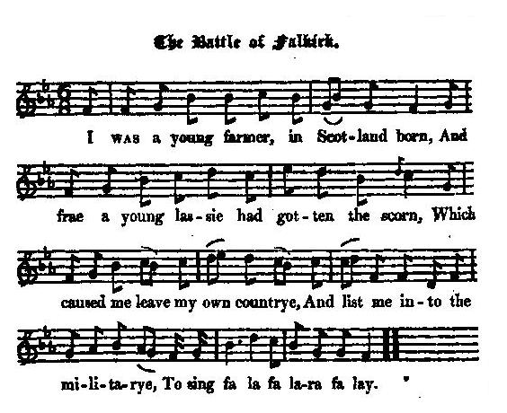

The Battle of Falkirk (a Whig song)
La bataille de Falkirk (Chant Whig)
Author unknown
Tune - Mélodie"The Battle of Falkirk"
from Hogg's "Jacobite Relics" 2nd Series Appendix, Whig Song N°23, page 464, 1821
Sequenced by Christian Souchon

|
To the tune:
Hogg gives no information about this tune. |
A propos de la mélodie:
Hogg ne fournit aucun renseignement sur cette mélodie. |

|
THE BATTLE OF FALKIRK
1. I Was a young farmer, in Scotland born, And frae a young lassie had gotten the scorn, Which caused me leave my own countrye, And list me into the militarye, To sing fa la fa la-ra fa lay. 2. There was an old sergeant from England came down, To list on young rogues by the took of the drum ; He proffered me gold, and away I did go To fight with the French and the Spaniards also. With my fa la fa lara fa lay. 3. And now to Scotland again I am come, To fight with the rebel Pretender of Rome, And on Falkirk moor, in the time of a shower, So hot an engagement I ne'er did endure, With my fa la fa lara fa lay. 4. I believe that old Lucky was present there, Or him that is called the Prince of the Air ; For the wind and the rain against us arose That moment we went to encounter our foes. With our fa la fa lara fa lay. 5. Our horsemen they fired and turned their back, The rebels they fired crack for crack, But the Glasgow Militia they gave a platoon, Which made the bold rebels come tumbling down, With their fa la falara fa lay. 6. Five platoons we gave in their face, Which beat the bravest out of his place; If Hawley had rallied and come to his stance, We had beat our foes to death and to France, With their fa la fa lara fa lay. 7. To Edinburgh then we posted in haste, For fear that the rebels had gone to the east, And we in Falkirk, if they had gone there, We had been ashamed for evermair , With our fa la fa lara fa lay. 8. The Highlander hash cried " Victory" then, On Falkirk moor, while stripping the slain, Though many who were on the field can tell, How for one of our men two rebels there fell; With their fa la fa lara fa lay. 9. Now I've been a soldier these years seventeen, A drap of my blood was there never yet seen ; I have beat the French by land and by sea, And I never have gotten a wound upon me. With my fa la fa lara fa lay. Source: "The Jacobite Relics of Scotland, being the Songs, Airs and Legends of the Adherents to the House of Stuart" collected by James Hogg, volume 2 published in Edinburgh by William Blackwood in 1821. |
LA BATAILLE DE FALKIRK
1. Moi je viens d'Ecosse, jeune paysan Qui pour les beaux yeux d'une charmante enfant Fut contraint de partir loin de son pays, oui Contraint de s'enrôler dans l'infanterie. Sur l'air du tra la la la la la. 2. L'était un vieux sergent-recruteur anglais Au son du tambour il venait enrôler. Il m'offrit de l'or et me voilà parti, oui Combattre le Français, l'Espagnol aussi, oui Sur l'air du tra la la la la la. 3. Voici qu'en Ecosse à présent je reviens Mâter la fronde du Prétendant romain. Sur Falkirk et sa lande il pleut à torrent. Non, Jamais je ne vis un tel acharnement, non, Sur l'air du tra la la la la la. 4. Je crois que le diable était de la partie Où celui qu'on dit le Prince de la pluie, Le vent et la pluie nous soufflaient dans le nez, oui Lorsque l'ennemi commençait à tirer, oui, Sur l'air du tra la la la la la. 5. Nos dragons tirent, puis ils font demi-tour. Et les rebelles ripostent à leur tour. Mais la Milice de Glasgow a fait feu, oui Abattant les rebelles à qui mieux mieux, oui Sur l'air du tra la la la la la. 6. Six fois de suite avons chargé puis tiré. Les plus braves en sont tout désemparés. Si Hawley avait assuré la défense, Les autres seraient en enfer et en France. Sur l'air du tra la la la la la. 7. Nous avons en hâte rejoint Edimbourg De peur qu'ils ne partent vers l'est à leur tour, Nous à Falkirk, et eux là-bas: c'eût été, oui, Un camouflet, de quoi rougir à jamais , oui. Sur l'air du tra la la la la la. 8. Le tas de Highlanders crie "Victoire" alors, Tandis qu'il s'affaire à dépouiller les morts. Pourtant nombreux sont ceux qui vous diront que, oui Pour un mort chez nous, il y en eut deux chez eux, oui Sur l'air du tra la la la la la. 10. Cela fait dix-sept ans que je suis soldat Jamais, de tout ce temps, mon sang ne coula J'ai combattu les Français sur terre et su-ur Mer, sans jamais avoir la moindre égratignure Sur l'air du tra la la la la la. (Trad. Christian Souchon (c) 2010) |